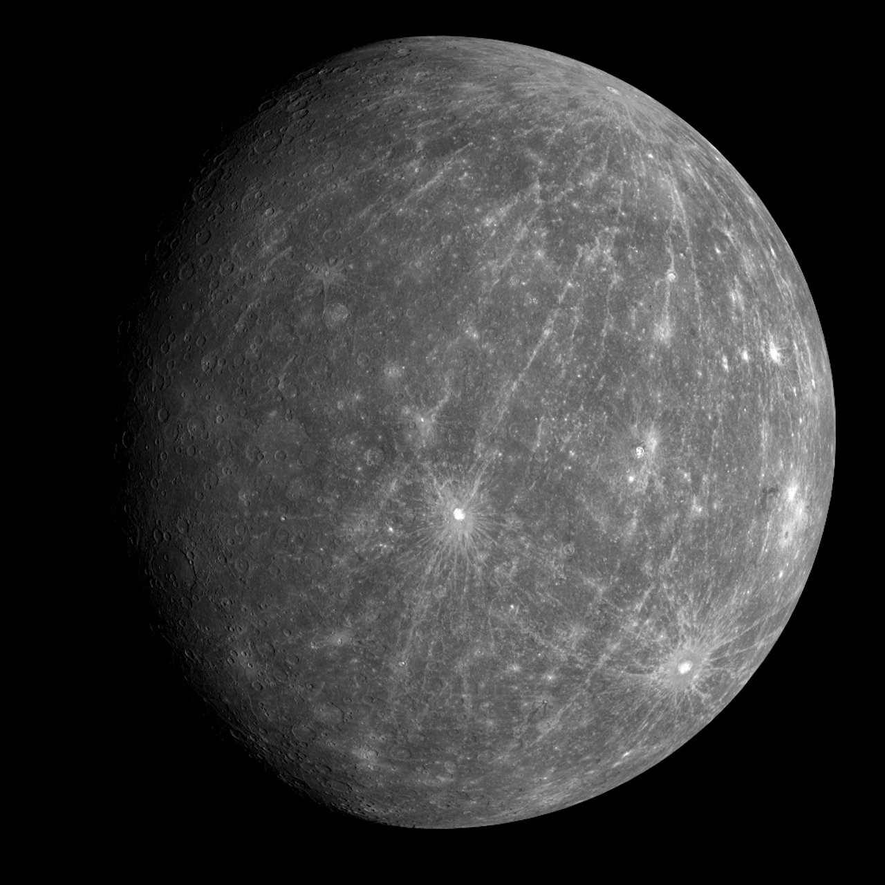
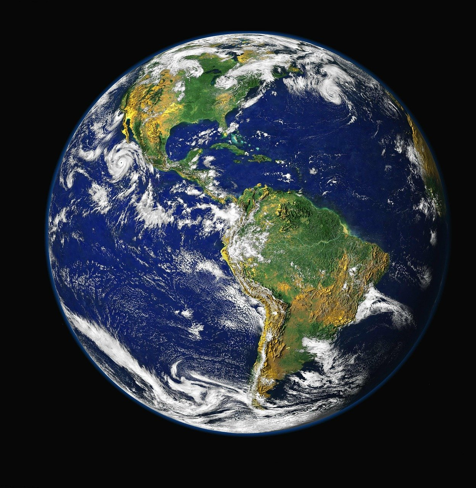
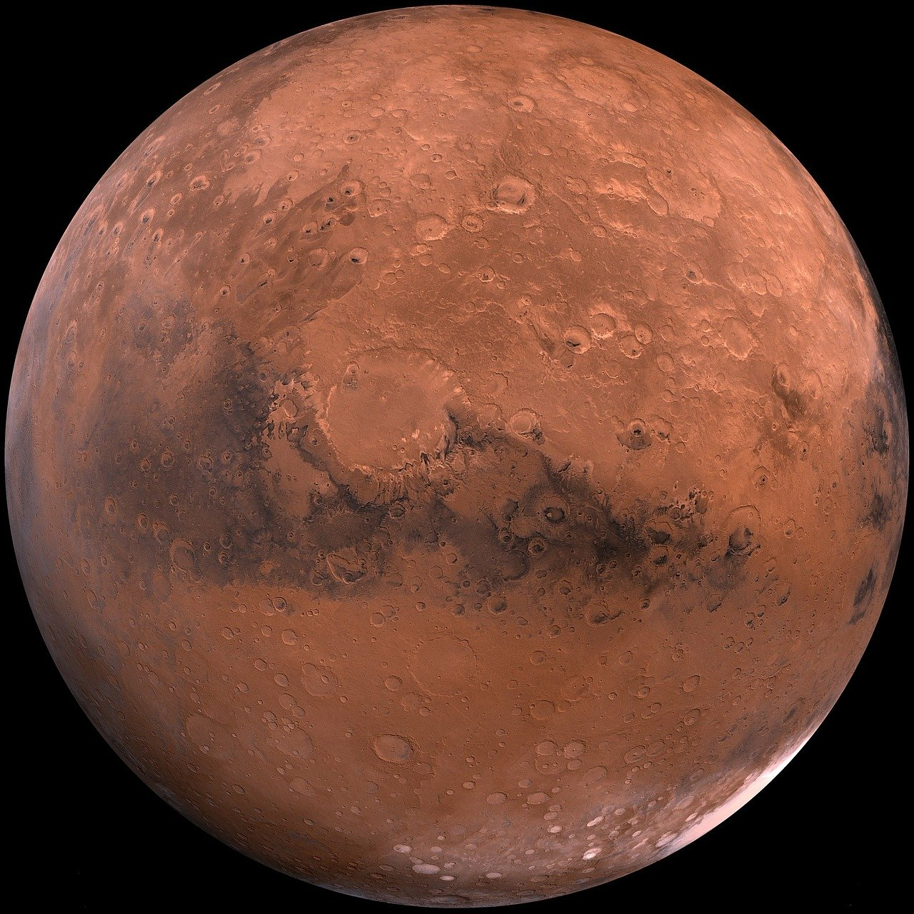
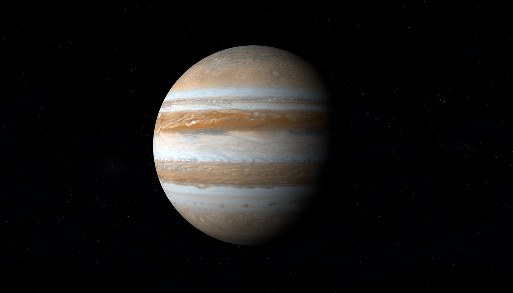
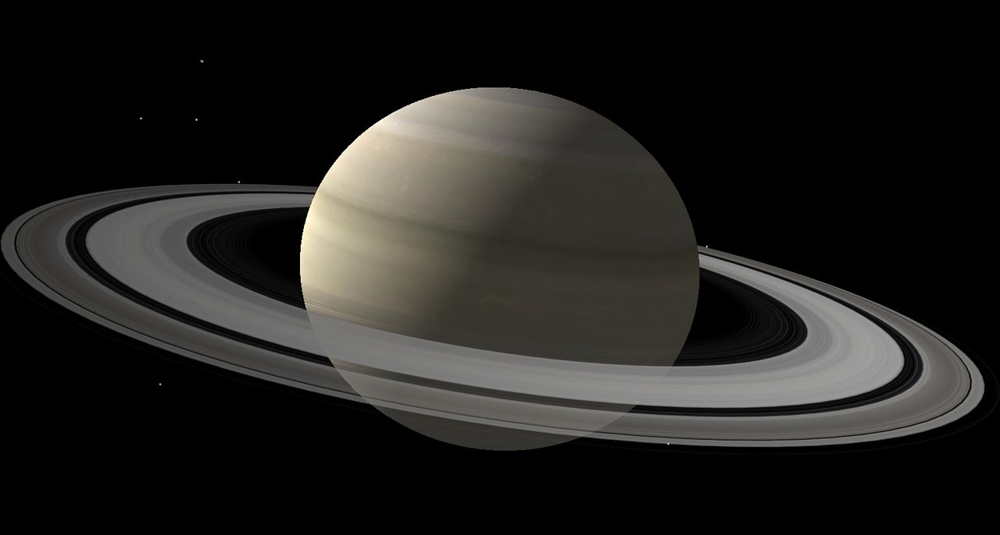

Sistema Solar
- 
- 
- 
- 
- 
-

Mercúrio
Mercúrio é o planeta mais próximo ao Sol e o oitavo em tamanho no sistema solar. A distância média é de 57,9 milhões de quilômetros do Sol.
É basicamente constituído por ferro, sendo chamado por Iron Planet. Pode ser visto da Terra a olho nu, contudo pouco antes do amanhecer e instantes após o anoitecer porque sua proximidade com o Sol dificulta a observação.
Já era observado a 3 mil anos a.C. e recebeu dos gregos dois nomes: Apolo, por sua aparição matutina e Hermes, a estrela da noite.
Devido à sua velocidade, foi batizado com o nome de Mercúrio por ser o deus do comércio, das viagens e da malandragem.
É o planeta mais rápido do Sistema Solar, perfazendo 47,87 quilômetros por segundo ao redor do Sol. A superfície é semelhante à da Lua, rochosa e com diversas crateras.
Características
O diâmetro de Mercúrio é de 4.800 km. É considerado um Planeta de órbita excêntrica porque a distância em relação ao Sol muda conforme a posição na órbita e isto é responsável pela variação de temperatura do planeta, de 180ºC a 400ºC.
Os astrônomos o consideram o menor no Sistema Solar desde que Plutão foi rebaixado à nomenclatura de Planeta Anão. A atmosfera do planeta Mercúrio é constituída de potássio, sódio, hélio, oxigênio molecular, hidrogênio, além de nitrogénio, dióxido de carbono e vapor de água.
Terra
O Planeta Terra é o terceiro dos oito planetas que fazem parte do Sistema Solar. A partir do Sol: Mercúrio, Vênus, Terra, Marte, Júpiter, Saturno, Urano e Netuno.
Também chamado de "Planeta Azul", recebe essa denominação posto que grande parte do planeta é formado por água
Qual a origem da Terra?
Segundo os estudos, a Terra se formou há 4,56 bilhões de anos. Inicialmente, o planeta chamado de Proto-Terra sofria com diversas colisões de outros astros que vagavam pelo universo, como a Terra. Uma dessas colisões teria sido a responsável pela formação da Lua.
Nesse primeiro momento, a Terra encontrava-se envolta em gás e com uma intensa atividade vulcânica. Ao longo de todo um processo de resfriamento, tornou-se possível a formação da crosta terrestre.
O arrefecimento do novo planeta tornou possível a presença de água em estado líquido e, consequentemente, a formação dos oceanos. Desse modo, concluiu-se o processo de formação do planeta Terra, há 4 bilhões de anos.
Algumas centenas de milhões de anos após essa forma, tem início a vida, a partir, dá abiogênese química oriunda da radioatividade e das condições atmosféricas.
Surgem as primeiras células procariontes e, posteriormente as algas anaeróbicas que produziram o oxigênio presente na atmosfera. O oxigênio foi responsável pelo surgimento dos demais seres vivos dentro de todo um processo evolutivo da vida no planeta.
Todo esse processo evolutivo culminou no aparecimento dos primeiros hominídeos há cerca de 14 milhões de anos. O homo sapiens sapiens (ser humano atual) surgiu há apenas 350 mil anos.
Quais as principais características do planeta?
O planeta Terra é um dos quatro planetas telúricos (de formação rochosa) do Sistema Solar, sendo os outro: Mercúrio, Vênus e Marte.
É o único planeta do Sistema Solar em que existe água em estado líquido, característica que junto ao oxigênio e a temperatura média de 14ºC tornam possível a vida no planeta.
Essa água corresponde cerca de 70% da superfície do planeta, local chamado de hidrosfera. A Terra é composta de diversos gases, de forma que em sua atmosfera encontramos principalmente, o nitrogênio (78%) e oxigênio (21%).
Marte
Marte é o quarto planeta mais próximo do Sol e o segundo menor planeta do sistema solar, depois de Mercúrio, sendo consideravelmente menor que o planeta Terra.
Apresenta uma coloração avermelhada, pela presença de óxido de ferro na sua superfície. Por isso, recebeu o nome de Marte, em homenagem ao deus romano da guerra.
Possui duas pequenas luas de formato irregular: Fobos (medo) e Deimos (pânico). Seus nomes derivam da mitologia grega e representam os filhos de Ares (Marte) e Afrodite (Vênus).
Marte é um dos planetas mais estudados do sistema solar. Podendo ser visto da Terra a olho nu, ou seja, sem auxílio de um telescópio.
A duração do dia em Marte aproxima-se do planeta Terra, com 24 horas e 37 minutos, embora o ano marciano tenha duração de 687 dias terrestres.
Características de Marte
Marte é um planeta muito frio, árido e rochoso. A sua temperatura máxima é de aproximadamente 25°C, com uma média de -60°C, a qual pode chegar até cerca de -140°C durante à noite.
Sendo um planeta terrestre (rochoso), suas camadas são compostas por atmosfera, crosta, manto e núcleo. A maioria das rochas na superfície é formada por basalto.
Sua atmosfera é muito fina e é composta essencialmente de gás carbônico, embora exista em menor quantidade o nitrogênio, oxigênio, argônio, dentre outros gases.
Quarto planeta do sistema solar, sua distância média ao Sol é de 228 milhões de km.
Possui dois satélites naturais, que são as "duas luas de Marte". Esses satélites foram descobertos em 1877 e muitos cientistas acreditam que podem ter sido asteroides capturados pela gravidade de Marte.
Júpiter
Júpiter é o maior planeta do Sistema Solar, o quinto a partir do Sol e o quarto corpo celeste mais brilhante no céu – os demais são o Sol, a Lua e Vênus. A massa é 318 vezes superior à da Terra e maior que todos os planetas do Sistema Solar juntos.
Tem cerca de 143 mil quilômetros de diâmetro no equador, o que equivale a 11 vezes mais que o diâmetro da Terra. É orbitado por 67 satélites naturais, situando-se a uma distância média de 778,3 milhões de quilômetros do Sol.
Curiosidades
Foi batizado com esse nome em homenagem ao governante do Olimpo, Júpiter, o deus dos deuses. Júpiter, assim como Saturno, exibe um sistema de anéis, contudo são tênues e menos brilhantes, não observáveis a partir da Terra e que só foram descobertos em 1979 pela sonda Voyager 1. É um dos quatro Gigantes Gasosos, juntamente com Saturno, Urano e Netuno. Gigantes Gasosos são compostos, principalmente pelos gases hidrogênio, hélio e metano e, ainda, um pequeno núcleo sólido no interior.
Características
A atmosfera de Júpiter é composta por hidrogênio e hélio, tendo, ainda, traços de metano, amônia, vapor d'água e outros componentes a uma temperatura de 103ºC. O planeta, cujo formato é de uma esfera oblata, tem elevada pressão atmosférica e a intensidade provoca a quebra dos átomos hidrogênio, que se transforma em metal.
Também são encontrados na atmosfera traços de metano, vapor de água, amoníaco, sílicas, carbono, etano, sulfeto de hidrogênio, néon, oxigênio, fosfina e enxofre. Na parte externa da atmosfera há cristais de amônio congelado e traços de benzeno.
A atmosfera do planeta é dividida em diversas faixas, em várias latitudes, resultando em turbulência e tempestades. A mais conhecida é a Grande Mancha Vermelha, descoberta no século XVII e cujos ventos chegam a 500 quilômetros por hora. Essa tempestade tem um diâmetro transversal duas vezes maior do que a Terra.
Júpiter foi observado a primeira vez por Galileu Galilei, em 1610, quando também foi possível a identificação de quatro de seus 63 satélites, Io, Europa, Ganimedes e Calisto. A primeira sonda a visitar Júpiter foi a Pioneer 10 em 1973. Também foram usados como instrumentos de observação as visitas das sondas Pioneer 11, Voyager 1, 2 e Ulisses. A sonda Galileu orbitou Júpiter durante 8 anos, terminando o seu serviço em Setembro de 2003. É ainda observado regularmente pelo Telescópio Espacial Hubble.
Saturno
Saturno é o sexto planeta a partir do Sol, e o segundo maior do sistema solar. O primeiro é Júpiter. É conhecido pelo complexo sistema de anéis formados principalmente por gelo e poeira cósmica e possui 53 luas conhecidas e outras nove em pesquisa.
O diâmetro de Saturno é de 119,3 mil quilômetros e o seu volume é 755 vezes maior que a Terra. Possui uma das mais rápidas rotações do Sistema Solar de oeste para leste, demorando 10 horas e 39 minutos para dar a volta sobre si mesmo.
O movimento de translação – em volta do Sol – é feito em 29 anos, 167 dias e 6 horas terrestres a 34,7 quilômetros por hora. É um planeta gasoso, juntamente com Júpiter, Urano e Netuno e a temperatura na superfície é de 125º C negativos.
O planeta Saturno foi descoberto em 1610 pelo astrônomo italiano Galileu Galilei e recebeu o nome do deus romano da agricultura. É o planeta mais distante que pode ser observado da Terra a olho nu.
Características
Por ser um planeta gasoso, é composto principalmente por hidrogênio e hélio. Ou seja, não há superfície sólida. O centro de Saturno é composto por um núcleo denso de rocha, gelo e água.
Há também outros compostos feitos sólido pela pressão e calor intensos. O planeta é recoberto por hidrogênio metálico líquido, dentro de uma camada de hidrogênio líquido
O planeta já foi explorado por cinco missões espaciais. A última, a Cassini, iniciou a exploração em 2004 e a Nasa prevê concluir os trabalhos em 2017.
Os anéis de Saturno
As observações realizadas em Saturno indicam que os anéis do planeta são formados por pedaços de cometas, asteroides e luas despedaçadas. Os anéis mais conhecidos são denominados A, B e C, mas há sete no total, todos representam letras do alfabeto à medida em que foram descobertos. Cada um tem milhares de quilômetros de extensão, chegando a 282 mil quilômetros, mas são, em geral, de espessura média a 1 quilômetro.
Curiosidades
As primeiras observações dos anéis de Saturno foram realizadas por Galileu Galilei, mas só foi possível ter maiores detalhes da formação por meio das explorações das sondas Voyager 1 e Voyager 2, em 1980. A complexidade ainda impede a indicação precisa da composição dos anéis, que são orbitados por duas luas, Encke e Keeler gaps.
Embora permaneçam em torno de Saturno, os anéis orbitam em velocidades diferentes. Na composição de anéis, as divisões também têm suas próprias características, como a Divisão de Cassini, uma lacuna medindo 4,7 mil quilômetros.
As Luas de Saturno
A primeira lua de Saturno a ser descoberta foi Titã, por Christiaan Huygens, em 1655. Em seguida, Giovanni Domenico Cassini descobriu Iapetus (1671), Rhea (1672), Dione (1684), e Tétis (1684). As luas Mimas e Enceladus foram descobertas por William Herschel em 1789 e 50 anos mais tarde foram observadas Hyperion (1848) e Phoebe (1898).
Com a melhoria no sistema de observação, no século 19 foram descobertas outras luas a orbitar Saturno, totalizando 18. Em decorrência dos trabalhos da missão Cassini já foram identificados 53 satélites.
Urano
Urano é o sétimo planeta a partir do Sol, o terceiro maior do Sistema Solar e foi o primeiro a ser encontrado por meio de um telescópio, pelo astrônomo William Herschel em 1781. Demora 84 anos terrestres para completar uma rotação ao sol. Urano é o nome do deus grego do céu.
Assim como Vênus, Urano gira de leste a oeste. Observações mais detalhadas do planeta foram realizadas pela sonda Voyager, em 1986 e pelo telescópio Hubble. Juntamente com Netuno, é um dos dois gigantes de gelo do céu. É formado, principalmente, por hidrogénio e hélio, sendo classificado também como planeta gasoso.
Características
A velocidade da órbita de Urano é de 27,4 mil quilômetros por hora e a massa é 14,5 vezes maior que a da Terra. A atmosfera de Urano é constituída, principalmente, de hidrogênio, hélio e metano. A temperatura na superfície chega a 216ºC negativos. A cor azulada resulta da absorção de luz vermelha do metano nas camadas superiores da atmosfera.
Curiosidades
O planeta Urano exibe 13 anéis. As observações mais evidentes dos anéis de Urano ocorreram em 1977, por equipes do Airborne Observatory Kuiper e do Observatório de Perth, da Austrália. Na ocasião, foram descobertos cinco anéis, denominados Alpha, Beta, Gamma, Delta e Epsilon, considerando a ordem crescente de distância do planeta pelos pesquisadores do Airborne Observatory.
Já a equipe de Perth identificou seis mergulhos distintos na luz das estrelas, que eles chamaram anéis de 1 a 6. Após as observações da Voyager 2, em 1986, foram descobertos mais dois anéis.
Os anéis estão localizados na parte interna das órbitas dos satélites, têm muitas divisões, são opacos e estreitos. A composição dos conjuntos de anéis de Urano não é conhecida, mas assim como os de Saturno, seriam formados por gelo e partículas escuras que não refletem luz. A formação teria ocorrido por choques de satélites, mas não há dados conclusos.
As Luas de Urano
O planeta possui 27 luas conhecidas que são nomeadas com personagens das obras de William Shakespeare ou Alexander Pope. As primeiras quatro luas, Titania, Oberon, Ariel e Umbriel foram descobertas entre 1787-1851. A mais complexa de todas, Miranda, foi descoberta em 1948.